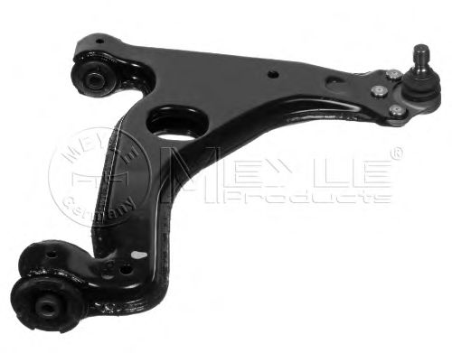

По целому ряду причин времени на написание постов в блог вдруг стало не хватать, но так как историй в жизни происходит много и не все они скучные, заставлю себя извлекать их из головы и выражать словами на этих страницах.
Очередное «взамодействие» с ГИБДД произошло уже пару месяцев назад, но кажется оно достойно упоминания.
Итак, начиналась осень… Я ехал на машине в сторону ФПК по проспекту Химиков. На перекрёстке с улицей Волгоградской я перестроился в правый ряд, чтобы повернуть направо. Собирался загораться жёлтый и я чуть ускорился, чтобы успеть повернуть.
В среднем ряду стояла «шестёрка», водитель которой тоже ускорился. Правда ускориться ему кто-то приказал из среднего ряда тоже в мой ряд. Визг тормозов, всё такое. Водитель «шестёрки», подрезая меня, мчит вперёд. Я ударяю в бордюр, расстраиваюсь, запоминаю номер. Звоню в ГИБДД.
Тут надо, сказать, что похожий опыт у меня уже был. Поэтому как человек, взаимодействующий с ГИБДД уже не первый раз иллюзий особых я по поводу реформированных органов не питал. Дежурный вежливо представился, номер нарушителя записывать не стал. Сказал ждите. Неуютно расположившись в машине, создавая пробку я сел ждать.
Из повреждений был поцарапан диск, повреждена шина, погнут рычаг. Хотелось возмещения.

Сотрудники ГИБДД приехали и сходу поинтересовались. Капитан Хлебников поинтересовался, зачем это я вызвал Офицеров, если участника второго нет? Заметил, что мне вероятно придётся ремонтировать бордюр. Ведь я повредил имущество города. На мой вопрос, а что мне было делать? Он ответил, конечно бить другой автомобиль. Нет касания нет ДТП. Спросил есть ли КАСКО. Я сказал, что нет. «Скупой платит дважды» вежливо заметил капитан Хлебников.
Я поинтересовался, что если я сам найду второго участника и мы приедем с ним в ГИБДД. Сотрудники сказали, «он чо дурак?» но схему нарисовали. Приезжай.
Тем временем второй участник, назовём его Геннадий (тем более его так назвали родители) на своём автомобиле ВАЗ 2106 гос.номер Н538ХО уже подъезжал к Юрге. Родителей Геннадия помогли найти по месту его жительства в конце проспекта Ленина. Геннадий выразил согласие с тем, что стоит посетить отдел разбора ДТП.
Вечером мы с ним сидели в ГАИ и писали объяснительные.
Вообще работа в отделе разбора кемеровского ГИБДД построена следующим образом. Все участники ГИБДД (потерпевшие естественно тоже) — овцы. Должны сидеть (раньше было «должны стоять») в тесной комнате и ждать когда сотрудники ГИБДД выделят им время. Времени у сотрудников очень мало. Разбор ДТП заберёт у вас минимум часов 10, часто это ночные часы. Ситуация, вероятно, усугубилась еще и тем, что количество полицейских в последние годы было сокращено, и теперь разбор ДТП переводится на коммерческие рельсы посредством так называемых «аварийных комиссаров», но об этом как-нибудь не сегодня.
Геннадий извинялся, сказал, что думал я успел проскочить. Написал всё как было. Дело было на выходных. Капитан Хлебников захотел побеседовать с Геннадием отдельно, а потом сказал приходить в среду. В среду он сказал, что хочет побеседовать с Геннадием еще раз, увидимся мол в воскресенье.
В воскресенье сотрудник вручил мне постановление об прекращении производства по делу об административном правонарушении с формулировкой «Водитель при возникновении опасности для движения, которую водитель в состоянии обнаружить не принял возможных мер к снижению скорости вплоть до остановки и совершил наезд на препятствие (бардюр).
На моё недоумение капитан полиции сказал, что приходил Геннадий и от всего отказался. У него на это есть конституционное право, отметил господин полицейский. Я позвонил Геннадию. Тот несколько раз не брал трубку. Потом ответил и посетовал, что ему не оставалось ничего другого. Капитан Хлебников сказал Геннадию, что Геннадия лишат прав, за то, что он скрылся с места ДТП.
Спрашивать о личном интересе капитана в таком повороте дела мне показалось неловким. Большинство знакомых советовало пойти с таким раскладом к другим сотрудникам ГИБДД, но я решил, что время дороже, заменил рычаг и желаю здоровья всем участникам этой истории.
Берегите себя и будьте сами себе капитаном.